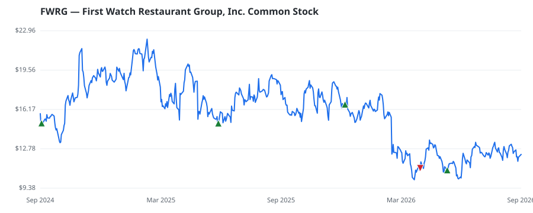

bullish · bearish · n/a — dots: price>SMA10 · SMA10>SMA50 · SMA50>SMA200 · up>down volume (20d)
Consumer Services · small cap
Members who bought FWRG earned a dollar-weighted -15.3% from their disclosure dates, versus +17.1% for the S&P 500 over the same holding windows (-32.4% alpha).

▲ green = a disclosed purchase · ▼ red = a disclosed sale (plotted on disclosure date)
First Watch Restaurant Group Inc is a daytime restaurant concept serving made-to-order breakfast, brunch, and lunch using fresh ingredients. The company generates revenues from Restaurant sales and Franchise revenues. It generates maximum revenue from Restaurant sales. RETAIL-EATING PLACES · website
| Revenue | $1.2B | Net income | $19.4M |
|---|---|---|---|
| Operating income | $27.5M | Diluted EPS | $0.31 |
| Assets | $1.7B | Equity | $626.3M |
| Member | Chamber | Out-performer | Disclosed buys $ | Return on buys |
|---|---|---|---|---|
| Josh Gottheimer | house | — | $16K | -7.3% |
| Gilbert Cisneros | house | — | $16K | -23.3% |
Disclosed $ figures are bracket midpoints — filings report ranges (e.g. $1,001–$15,000), not exact amounts.